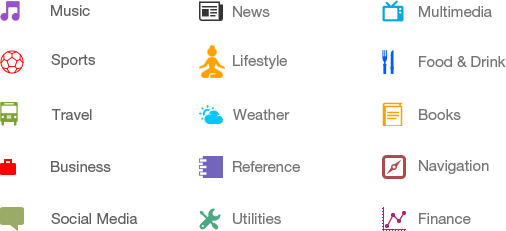
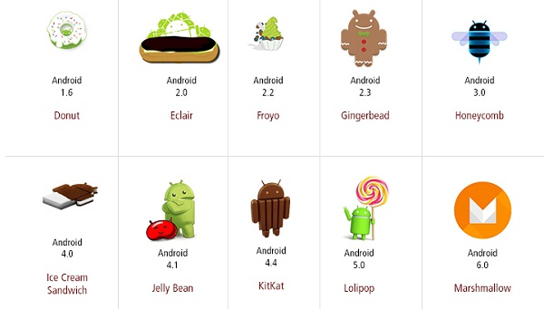

Android is an open source and Linux-based operating system for mobile devices such as smartphones and tablet computers. Android was developed by the Open Handset Alliance, led by Google, and other companies. This tutorial will teach you basic Android programming and will also take you through some advance concepts related to Android application development.
This tutorial has been prepared for the beginners to help them understand basic Android programming. After completing this tutorial you will find yourself at a moderate level of expertise in Android programming from where you can take yourself to next levels.
Android programming is based on Java programming language so if you have basic understanding on Java programming then it will be a fun to learn Android application development.
Android is an open source and Linux-based Operating System for mobile devices such as smartphones and tablet computers. Android was developed by the Open Handset Alliance, led by Google, and other companies. Android offers a unified approach to application development for mobile devices which means developers need only develop for Android, and their applications should be able to run on different devices powered by Android. The first beta version of the Android Software Development Kit (SDK) was released by Google in 2007 where as the first commercial version, Android 1.0, was released in September 2008. On June 27, 2012, at the Google I/O conference, Google announced the next Android version, 4.1 Jelly Bean. Jelly Bean is an incremental update, with the primary aim of improving the user interface, both in terms of functionality and performance. The source code for Android is available under free and open source software licenses. Google publishes most of the code under the Apache License version 2.0 and the rest, Linux kernel changes, under the GNU General Public License version 2.

| Sr.No. | Feature & Description |
|---|---|
| 1 | Beautiful UI Android OS basic screen provides a beautiful and intuitive user interface. |
| 2 | Connectivity GSM/EDGE, IDEN, CDMA, EV-DO, UMTS, Bluetooth, Wi-Fi, LTE, NFC and WiMAX. |
| 3 | Storage SQLite, a lightweight relational database, is used for data storage purposes. |
| 4 | Media support H.263, H.264, MPEG-4 SP, AMR, AMR-WB, AAC, HE-AAC, AAC 5.1, MP3, MIDI, Ogg Vorbis, WAV, JPEG, PNG, GIF, and BMP. |
| 5 | Messaging SMS and MMS |
| 6 | Web browser Based on the open-source WebKit layout engine, coupled with Chrome's V8 JavaScript engine supporting HTML5 and CSS3. |
| 7 | Multi-touch Android has native support for multi-touch which was initially made available in handsets such as the HTC Hero. |
| 8 | Multi-tasking User can jump from one task to another and same time various application can run simultaneously. |
| 9 | Resizable widgets Widgets are resizable, so users can expand them to show more content or shrink them to save space. |
| 10 | Multi-Language Supports single direction and bi-directional text. |
| 11 | GCM Google Cloud Messaging (GCM) is a service that lets developers send short message data to their users on Android devices, without needing a proprietary sync solution. |
| 12 | Wi-Fi Direct A technology that lets apps discover and pair directly, over a high-bandwidth peer-to-peer connection. |
| 13 | Android Beam A popular NFC-based technology that lets users instantly share, just by touching two NFC-enabled phones together. |
Android applications are usually developed in the Java language using the Android Software Development Kit. Once developed, Android applications can be packaged easily and sold out either through a store such as Google Play, SlideME, Opera Mobile Store, Mobango, F-droid and the Amazon Appstore. Android powers hundreds of millions of mobile devices in more than 190 countries around the world. It's the largest installed base of any mobile platform and growing fast. Every day more than 1 million new Android devices are activated worldwide. This tutorial has been written with an aim to teach you how to develop and package Android application. We will start from environment setup for Android application programming and then drill down to look into various aspects of Android applications.
There are many android applications in the market. The top categories are -
The code names of android ranges from A to N currently, such as Aestro, Blender, Cupcake, Donut, Eclair, Froyo, Gingerbread, Honeycomb, Ice Cream Sandwitch, Jelly Bean, KitKat, Lollipop and Marshmallow. Let's understand the android history in a sequence.
